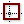

 Deconstuct Rectangle
Component Index > Grasshopper > Curve > Analysis > DRec
Retrieve the base plane and side intervals of a rectangle.
Inputs
| Name | ID | Description | Type |
|---|---|---|---|
| Rectangle | R | Rectangle to deconstruct | Rectangle |
Outputs
| Name | ID | Description | Type |
|---|---|---|---|
| Base Plane | B | Base plane of rectangle | Plane |
| X Interval | X | Size interval along base plane X axis | Interval |
| Y Interval | Y | Size interval along base plane Y axis | Interval |
Copyright © 2016 Robert McNeel & Associates.